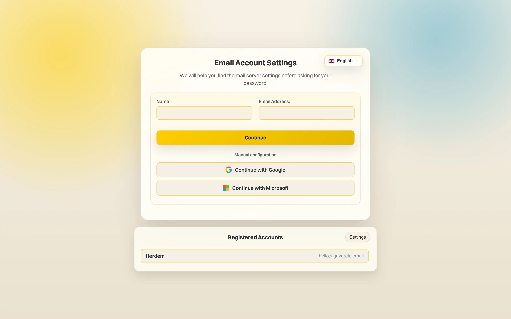

guvercin'i indir
ücretsiz ve açık kaynak. hesap yok, takip yok, şart yok.
sürüm 0.1.0 · yayın tarihi 29 Temmuz 2026 · yaklaşık 28 MB · macOS 11 veya üzeri
sistemin bu değil mi? bütün indirmeler ↓
kurmaya hazır değil misin? guvercin'i çevrimiçi dene →
bütün indirmeler
bütün paketler aynı herkese açık depodan çıkıyor ve aşağıdaki her bağlantı GitHub sürümler sayfasına gidiyor.
macOS
macOS 11 veya üzeri
Applications klasörüne sürüklediğin bir disk kalıbı. tek bir universal paket — aynı dosya hem Apple Silicon hem Intel'de çalışıyor, seçim yapman gerekmiyor.
biçim: .dmg
Windows
Windows 10 veya 11
guvercin'i Başlat menüne koyan ve istersen mailto: bağlantıları için kaydeden bir NSIS yükleyicisi.
biçim: .exe · yükleyici henüz kod imzalı olmadığı için Windows bir SmartScreen uyarısı gösterebilir — Ek bilgi → Yine de çalıştır'ı seç.
Linux
64-bit Linux
iki yaygın dağıtım ailesi için yerel paketler. WebKitGTK 4.1 ve libsecret gerekiyor, ki çoğu masaüstünde zaten var.
biçimler: .deb ve .rpm
beta
beta kanalı
beta paketleri yeni özellikleri önce alır ve kararsız olabilir. verinin nasıl saklandığını da değiştirebilirler, o yüzden önemsediğin şeylerin yedeğini al. bir şey bozulursa lütfen GitHub'da bize söyle — beta zaten bunun için var.
sistem gereksinimleri
| platform | gerekenler |
|---|---|
| macOS | macOS 11 Big Sur veya üzeri; Apple Silicon ya da Intel. |
| Windows | Windows 10 veya 11, 64-bit. |
| Linux | WebKitGTK 4.1 ve libsecret bulunan güncel bir 64-bit dağıtım. |
| hepsi | yaklaşık 200 MB boş disk alanı, artı eşitlenen postan için yer; 4 GB RAM; ilk eşitleme için internet bağlantısı. |
kurulum
macOS
- .dmg dosyasını aç
- guvercin'i Applications klasörüne sürükle
- ilk açılışta uygulamaya sağ tıklayıp Aç'ı seç ve onayla — paket henüz noter onaylı olmadığı için normal çift tıklama engellenir.
Windows
- .exe yükleyicisini çalıştır
- SmartScreen çıkarsa Ek bilgi → Yine de çalıştır'ı seç
- guvercin'i Başlat menüsünden aç.
Linux
sudo dpkg -i guvercin_0.1.0_amd64.debya dasudo rpm -i guvercin-0.1.0.x86_64.rpmile kur- bağımlılıklar eksikse
sudo apt -f installçalıştır - guvercin'i uygulama menünden aç.


üç adımda hesabını ekle
- “Google ile devam et”i seç ya da e-posta adresini yaz
- tarayıcında onayla, ya da IMAP ve SMTP bilgilerini gir — guvercin bunları senin için bulmayı dener
- ilk eşitlemeyi bekle; sonrasında postan çevrimdışıyken de elinin altında.
istediğin kadar hesap ekleyebilirsin ve her biri kendi yerel veritabanını tutar.
kendin derle
kaynak herkese açık; indirdiğin uygulama, derleyebileceğin uygulamanın aynısı.
git clone https://github.com/guvercin-email/guvercin-desktop.git
cd guvercin-desktop
npm install
npm run app:buildplatformun için Rust ve Tauri ön gereksinimleri gerekecek — depodaki README hepsini sayıyor.
bir sorun mu var? support@guvercin.email adresine yaz — hepsini okuyoruz.